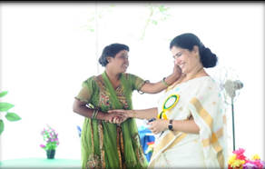

contact us:+91 861 2347276
ABOUT THE CHAIRPERSON
Hailing from a government official’s family from her childhood she always desired to do something which quenches her thirst, at the 9years when devastating Diviseema cyclone occurred, she was deeply moved and wanted to do something, where she collected various useful things for the relief of the survivors of the cyclone. From this incident she came to a vision that her thirst is for service to the poor and the needy and quiet from that day she never looked back. Quiet from her childhood she always been the best volunteer in scouts & guides at school levels and NCC, NSS at the college levels where she nurtured herself with discipline and belongingness to tune herself for the service of the mankind.Being divergent in thoughts and different in deeds Smt T. Vasantha Lakshmi Being a child prodigy in her academic career gestured to choose path of social service and charitable i.e., service to poor and education, old age & orphanage homes and medical relief to the poor, underprivileged and weaker sections of the communities wholly for Charitable purpose.
She was personally moved by the miseries of HIV victims especially among the children as a burning impact on the mind, of Smt. T. Vasantha Lakshmi She has initiated many programs and service to locate such ill-fated children.
She has gone to the extent of adopting few such children and taking care of their welfare including medication till date without any external help. Moved with compassion thinking about the fate of slum dwellers children who are attacked by the (JE) Japanese Encephalitis, she has initiated a bold and expensive move of procuring the vaccine from Kasauli of Himachal Pradesh and distributed at free of cost to the children of SC & ST there by reducing the death from 125 to 03 as per Statistics of government of India. She always believed that women empowerment is very much required for society development and stepping forward the rural women in and around Nellore District was given an opportunity to form self help groups at her behest and nearly more than 400 groups are running successfully. The influence of street children and their welfare was so great on her mind due to which she was determined to establish wide range of activities at free of cost for the benefit of poor and disabled children. Walking along with her mentor Dr. T. Ravi Kumar, M.D., D.Ch a renounced Pediatrician with a lovable personality, very amicable in nature and more importantly with similar ideologies and concern for poor and needy, who in turn has paved the way for bringing her dreams into materialization by establishing a Trust after her name called ‘VASANTHA LAKSHMI CHARITABLE TRUST & RESEARCH CENTRE’..
The attitude and thirst for social service have grown up day by day in proportion to her age and presently exposed as committed and full time social worker and reformer. With the present position as Chairman of VLCT & RC she is taking care of many lives’ in particular women and children there by doing all the above mentioned activities..
Serving the poor and the underprivileged communities Smt T. Vasantha Lakshmi is also publishing a socio-scientific magazine TABLET enlightening and spreading awareness to millions of people in and around Nellore District running successfully from the decade and marching into the second decade.
VLCT & RC PROFILE:
Vasantha Lakshmi Charitable Trust & Research Center, Nellore established in the year 1993, under Indian Trust Act 1882 Registered in the year 1998, Regd No.82/98 by renowned pediatrician Dr. T. Ravi Kumar., M.D., D.C.H (Pead), of Ravi Children Hospital, Nellore.The Mission adopts a synergistic approach "To Reach the Unreached" areas of Nellore District of Andhra Pradesh, South India. Having been in this noble work for the last two Decades Vasantha Lakshmi Charitable Trust & Research Center could venture to expand its services to the Kadapa district and Ongole Districts of Andhra Pradesh.